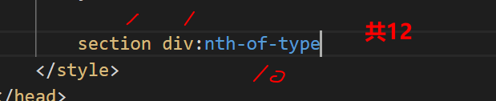
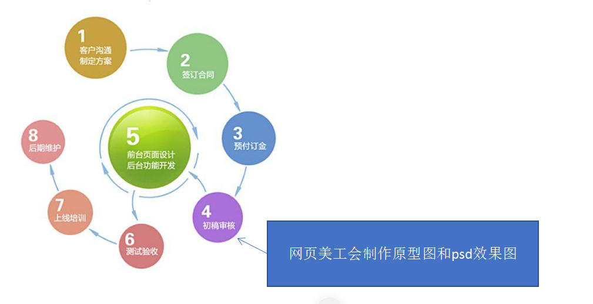

12-html+css_introdiction-pink，字数多了
如果文章也可以换页就好了，不过那样目录也许会出问题；
11. html5和css3提高
1.目标：
- 能够说出 3~5 个 HTML5 新增布局和表单标签
- 能够说出 CSS3 的新增特性有哪些
11.1 HTML5新特性
HTML5 的新增特性主要是针对于以前的不足，增加了一些新的标签、新的表单和新的表单属性等。
这些新特性都有兼容性问题，基本是 IE9+ 以上版本的浏览器才支持，如果不考虑兼容性问题，可以大量使用这些新特性。
11.1.1 布局
1.以前布局，我们基本用 div 来做。div 对于搜索引擎来说，是没有语义的
1 | <div class=“header”> </div> |
发展到了HTML5后，新增了一些语义化标签，这样的话更加有利于浏览器的搜索引擎搜索，也方便了网站的seo（Search Engine Optimization，搜索引擎优化），下面就是新增的一些语义化标签
optimization
英 [ˌɒptɪmaɪˈzeɪʃn] 美 [ˌɑːptɪməˈzeɪʃn]
n.
最佳（优）化；优选法；（使）最恰当（适宜，适合）;最佳条件选择；求最佳参数
<header>头部标签<nav>导航标签<article>内容标签；articlearticle
英 [ˈɑːtɪkl] 美 [ˈɑːrtɪkl]
n.
(报刊上的)文章，论文，报道;(协议、契约的)条款，项;物件，物品(尤指整套中的一件)
vi.
使受协议条款的约束;以协议（或契约）约束;订约将…收为学徒（或徒弟）;定约雇用进行控告;提出罪状（或指责）(against);签订协议<section>定义文档某个区域<aside>侧边栏标签<footer>尾部标签

2.如果写header与nav，就是这样：
1 |
|
2. 注意
- 这种语义化标准，主要是针对==搜索引擎==的
- 新标签，页面中，可多次使用。
- 在IE9中，需要把这些元素转换为块级元素。
- 移动端更喜欢用这些标签
- HTML5还增加了很多其他标签。
11.1.2 多媒体标签
P276；
1.多媒体标签分为 音频 audio 和视频 video 两个标签 使用它们，我们可以很方便的在页面中嵌入音频和视频，而不再去使用落后的flash和其他浏览器插件了。
因为多媒体标签的 属性、方法、事件比较多，因此我们需要什么功能的时候，就需要去查找相关的文档进行学习使用。
1. 视频标签-video
1.当前 元素支持三种视频格式： 尽量使用 mp4格式，它几乎支持所有浏览器
2.使用语法：
<video src="media/mi.mp4"></video>
3.浏览器兼容
| 浏览器 | MP4 | WebM | Ogg |
|---|---|---|---|
| Internet Explorer | YES | NO | NO |
| Chrome | YES | YES | YES |
| Firefox | YES 从 Firefox 21 版本开始 Linux 系统从 Firefox 30 开始 | YES | YES |
| Safari | YES | NO | NO |
| Opera | YES 从 Opera 25 版本开始 | YES | YES |
- MP4 = MPEG 4文件使用 H264 视频编解码器和AAC音频编解码器
- WebM = WebM 文件使用 VP8 视频编解码器和 Vorbis 音频编解码器
- Ogg = Ogg 文件使用 Theora 视频编解码器和 Vorbis音频编解码器
3.1 由于各个浏览器的支持情况不同，所以我们会有一种兼容性的写法，这种写法了解一下即可
1 | <video controls="controls" width="300"> |
- 上面这种写法，浏览器会匹配video标签中的source，如果支持就播放，如果不支持往下匹配，直到没有匹配的格式，就提示文本
4.video 常用属性，HTML5 中的新属性。
| 属性 | 值 | 描述 |
|---|---|---|
| autoplay New | autoplay | 如果出现该属性，则视频在就绪后马上播放。(谷歌浏览器需要添加muted来解决自动播放的问题，不知道现在还是不是这样；2020-9-14 05:30:21) |
| controls New | controls | 如果出现该属性，则向用户显示控件，比如播放按钮。 |
| height New | pixels | 设置视频播放器的高度。 |
| loop New | loop | 如果出现该属性，则当媒介文件完成播放后再次开始播放。 |
| muted New | muted | 如果出现该属性，视频的音频输出为静音。 |
| poster New | URL | 规定视频正在下载时显示的图像，直到用户点击播放按钮。 |
| preload New | auto metadata none | 如果出现该属性，则视频在页面加载时进行加载，并预备播放。如果使用 “autoplay”，则忽略该属性。 |
| src New | URL | 要播放的视频的 URL。 |
| width New | pixels | 设置视频播放器的宽度。 |
4.1 直接写<video src="media/mi.mp4"></video>是静止的一张图片。
加上autoplay，能自动播放
<video src="./5-video/01.mp4" autoplay="autoplay"></video>如果谷歌浏览器不行，就这样
<video src="./5-video/01.mp4" autoplay="autoplay" muted="muted"></video>不过本身，会使视频静音播放；可以手动调节，打开音量；
4.2 但是，还没有播放按钮，进度条，调节声音的等等
加上controls
<video src="./5-video/01.mp4" autoplay="autoplay" muted="muted" controls="controls"></video>已经试验，内部样式表无效
那，外部样式表应该也是没用的
只有内联样式有效
但平常css有的元素是有用的，比如高度，宽度；
4.3 如果播放完了一次，想继续播放，就需要循环
- 内联样式+
loop = "loop"
4.4 如果网页卡，视频加载不出，又不想黑在那，可以预放图片
内联样式+
poster = url但有另外妙用，用了这个属性后，就不会自动播放，显示着你放置的图片，等待你去点击播放；
不过我无法控制图片大小，例如我想放一个播放按钮，就会这样，把图片拉大：
1.要不干脆用定位，定在中间，用js，点击一下就消失。2020-10-6 04:33:57
5.还以为有自适应大小，貌似没有，就用width与height调整吧。
2. 音频标签-audio
1.基本使用
当前 元素支持三种视频格式： 尽量使用 mp3格式
2.语法：
<audio src="media/music.mp3"></audio>
3.浏览器兼容
目前，
| 浏览器 | MP3 | Wav | Ogg |
|---|---|---|---|
| Internet Explorer | YES | NO | NO |
| Chrome | YES | YES | YES |
| Firefox | YES | YES | YES |
| Safari | YES | YES | NO |
| Opera | YES | YES | YES |
4.属性：HTML5 中的新属性。
| 属性 | 值 | 描述 |
|---|---|---|
| autoplay | autoplay | 如果出现该属性，则音频在就绪后马上播放。 |
| controls | controls | 如果出现该属性，则向用户显示音频控件（比如播放/暂停按钮）。 |
| loop | loop | 如果出现该属性，则每当音频结束时重新开始播放。 |
| muted | muted | 如果出现该属性，则音频输出为静音。 |
| preload | auto metadata none | 规定当网页加载时，音频是否默认被加载以及如何被加载。 |
| src | URL | 规定音频文件的 URL。 |
4.1 和video一样，<audio src="media/music.mp3"></audio>后，不会有任何东西。需要添加autoplay才有效果；
- 同样的，谷歌浏览器把自动播放声音也去掉了，可能是防止吓到人
4.2 不过声音是没有画面的，即使自动播放了，也只有声音，页面啥都没有。
加上
controls能看到一些东西<audio src="media/music.mp3" autoplay="autoplay" controls="controls"></audio>
3. 小节
- 音频标签和视频标签使用方式基本一致
- 浏览器支持情况不同
- 谷歌浏览器把音频和视频自动播放禁止了
- 我们可以给视频标签添加 muted 属性来静音播放视频，音频不可以（可以通过JavaScript解决）
- 视频标签是重点，我们经常设置自动播放，不使用 controls 控件，循环和设置大小属性
11.1.3 新增表单元素
1.在H5中，帮我们新增加了很多类型的表单，这样方便了程序员的开发

案例：
1 | <!-- 我们验证的时候必须添加form表单域 --> |
2.例如email，没输入对

3.date日期，可以选择时间

4.手机端也合适

11.1.4 新增表单属性
| 属性 | 值 | 说明 |
|---|---|---|
| required | required | 表单拥有该属性表示其内容不能为空，必填 |
| autofocus | autofocus | 属性规定当页面加载时 <input> 元素应该自动获得焦点。 |
| placeholder | text | placeholder[^1] 属性规定可描述输入<input> 字段预期值的简短的提示信息 。 |
| autocomplete | on/off | autocomplete[^2] 属性规定 <input> 元素输入字段是否应该启用自动完成功能。默认值是”on” |
| multiple | multiple[^3] | 属性规定允许用户输入到 <input> 元素的多个值。 |
0.5 required 预览
1.placeholder效果预览：

- 预先放有文字，可以做简短的注释
1.1 可以css修饰
1 | input::placeholder{ |
- 这不经意让我想到：其他属性也可以这样吗？
- 去看看有哪些值？额，没看到。也许就特别的几个用得到css吧；
2.autofocus，自动焦点

每次打开百度，不需要我们点，就自动有打击了一次的效果；
3.autocomplete，提交成功过的字符会被记录

3.1 如何成功提交？要有name，或，id
搜索: <input type="search" name="sear" id="" />
不过在type=number那里，没有成功；
数量: <input type="number" name="num" id="" />获取这种类型，有隐藏输入记录吧。不不不，应该是autocomplete默认值是off
3.1.1 实验：
数量: <input type="number" name="num" id="" autocomplete="on" />
ok,还是不行；2020-9-14 21:40:29
4.multiple用于可以提交多个文件
<input type="file" name="" id="">
- 默认只能提交一个文件，即使用
shift和ctrl也无法选择多个
4.1 加上multiple就可以了,multiple翻译
<input type="file" name="" id="" multiple="multiple">
11.2 CSS3的新特性
1. CSS3 的现状
新增的CSS3特性有兼容性问题，ie9+才支持
移动端支持优于 PC 端
不断改进中
应用相对广泛
现阶段主要学习：==新增选择器==和==盒子模型==以及==其他特性==
2. CSS3 新增选择器
CSS3 给我们新增了选择器，可以更加便捷，更加自由的选择目标元素。
- 属性选择器
- 结构伪类选择器
- 伪元素选择器
3. 属性选择器
1.属性选择器可以根据元素特定属性的来选择元素。 这样就可以不用借助于类或者id选择器。
| 选择符 | 简介 |
|---|---|
| E[att] | 选择具有att属性的E元素 |
| E[att=“val”] | 选择具有att属性且属性值等于val的E元素 |
| E[att^=“val”] | 匹配具有att属性且属性值以val开头的E元素 |
| E[att$=“val”] | 匹配具有att属性且属性值以val结尾的E元素 |
| E[att*=“val”] | 匹配具有att属性且属性值中含有val的E元素 |
注意：类选择器、属性选择器、伪类选择器，权重为 10。
- 再注意，中括号里面的才是属性选择器，前面的 E，是标签选择器；
2.利用属性选择器就可以不用借助于类或者id选择器
1 | <!-- 1. 利用属性选择器就可以不用借助于类或者id选择器 --> |
3.属性选择器还可以选择属性=值得某些元素，==重点==
1 | <style> |
4.属性选择器可以选择属性值开头的某些元素
1 | /* 选择首先是div，然后具有class属性，并且属性值必须是icon开头的这些元素 */ |
5.属性选择器可以选择属性值结尾的某些元素
1 | <style> |
4. 结构伪类选择器
https://www.bilibili.com/video/BV14J4114768?p=282&spm_id_from=pageDriver
1.结构伪类选择器主要根据文档结构来选择其元素， 常用于根据父级选择器里面的子元素
| 选择符 | 简介 |
|---|---|
| E:first-child | 匹配父元素中的第一个子元素 E |
| E:last-child | 匹配父元素中最后一个 E 元素 |
| E:nth-child(n) | 匹配父元素中的第 n 个子元素 E |
| E:first-of-type | 指定类型 E 的第一个 |
| E:last-of-type | 指定类型 E 的最后一个 |
| E:nth-of-type(n) | 指定类型 E 的第n个 |
注意：类选择器、属性选择器、伪类选择器，权重为 10。
2.nth-child（n） 选择某个父元素的一个或多个特定的子元素（重点）
n 可以是数字，关键字和公式
n 如果是数字，就是选择第 n 个子元素， 里面数字从1开始…
n 可以是关键字：even 偶数，odd 奇数
n 可以是公式：常见的公式如下 ( 如果n是公式，则从0开始计算，但是第 0 个元素或者超出了元素的个数会被忽略 )
nth-child(n)从0开始，每次加1，往后面计算，这里面必须是n，不能是其他字母，等于选择了所有的孩子
2.1 主要是n，会自动从0++；
| 公式 | 取值 |
|---|---|
| 2n | 偶数 |
| 2n+1 | 奇数 |
| 5n | 5,10,15… |
| n+5 | 从第5个开始（包含第五个）到最后 |
| -n+5 | 前5个（包含第五个） |
2.2 为什么n+5，是>=5？
- 因为n从0++，所以：0+5,1+5,2+5,3+5，n+5；=5,6,7,8，…，n
2.3 案例
1 | <style> |
3.E:nth-child(n)与E:nth-of-type(n)的区别；
https://www.bilibili.com/video/BV14J4114768?p=285&spm_id_from=pageDriver
- child不是同孩子也选了；使真正的效果无法；2021-3-17 16:04:16
3.1 nth-child 会把所有的盒子都排列序号，执行的时候，首先看：nth-child(1)之后回去看前面div
3.2 nth-of-type 会把指定元素的盒子排列序号，执行的时候首先看，div指定的元素，之后回去看:nth-of-type(1)第几个孩子。
3.3
区别：
- nth-child 对父元素里面所有孩子排序选择（序号是固定的） 先找到第n个孩子，然后看看是否和E匹配
- nth-of-type 对父元素里面指定子元素进行排序选择。 先去匹配E ，然后再根据E 找第n个孩子
4.小结
- 结构伪类选择器一般用于选择父级里面的第几个孩子
- nth-child 对父元素里面所有孩子排序选择（序号是固定的） 先找到第n个孩子，然后看看是否和E匹配
- nth-of-type 对父元素里面指定子元素进行排序选择。 先去匹配E ，然后再根据E 找第n个孩子
- 关于 nth-child（n） 我们要知道 n 是从 0 开始计算的，要记住常用的公式
- 如果是无序列表，我们肯定用 nth-child 更多
- 类选择器、属性选择器、伪类选择器，权重为 10。
4.2 问：
1.你知道section div:nth-of-type的权重吗？
5. 伪元素选择器（重点）
1.伪元素选择器可以帮助我们利用CSS创建新标签元素，而不需要HTML标签，从而简化HTML结构。
| 选择符 | 简介 |
|---|---|
| ::before | 在元素内部的前面插入内容 |
| ::after | 在元素内部的后面插入内容 |
- 伪元素，是CSS3新增加的；如果只写了一个 冒号“:”，浏览器也会解析成两个，但是不标准。而且老版本的浏览器不会解析；2021-3-18 14:28:13
2.注意：
- before 和 after 创建一个元素，但是属于行内元素
- 不过，可以通过css改变display；
- 新创建的这个元素在文档树中是找不到的，所以我们称为伪元素
- 语法： element::before {}
- before 和 after 必须有 content 属性
- before 在父元素内容的前面创建元素，after 在父元素内容的后面插入元素
- 伪元素选择器和标签选择器一样，权重为 1
- 不过，div::after 或者 div：：before，一起权重是2；
3.before和after，虽然是前与后，但都是放在盒子里面的；不是放在盒子外面；
5.1 伪元素选择器使用场景1：伪元素字体图标
1.代码
1 | p::before { |
2.我看了看，卵的；
3.先要找资料；这里用的是：icomoon
- 这个在文档12里面有相关的一些介绍；
- 还有使用教程233
4.教程简单版：
1.找到资源fonts，放到html同目录下
笔记本：F:\三次元\8-字体\3-icomoon
2.在html的style或者css里面引用；
1
2
3
4
5
6
7
8
9
10@font-face {
font-family: 'icomoon';
src: url('fonts/icomoon.eot?7kkyc2');
src: url('fonts/icomoon.eot?7kkyc2#iefix') format('embedded-opentype'),
url('fonts/icomoon.ttf?7kkyc2') format('truetype'),
url('fonts/icomoon.woff?7kkyc2') format('woff'),
url('fonts/icomoon.svg?7kkyc2#icomoon') format('svg');
font-weight: normal;
font-style: normal;
}
- 3.使用：但是，这些符号都有相应的代号；用的是代号哈；
5.然后就是上面的代码；
- “\”，这个符号是关键
5.2 伪元素选择器使用场景2：仿土豆效果
1 | /* 当我们鼠标经过了 土豆这个盒子，就让里面before遮罩层显示出来 */ |
1 |
|
5.3 伪元素选择器使用场景3：伪元素清除浮动
1.额外标签法也称为隔墙法，是 W3C 推荐的做法。
- 注意： 要求这个新的空标签必须是块级元素。
2.父级添加 overflow 属性
3.父级添加after伪元素
4.父级添加双伪元素
1. 隔墙法
1.额外标签法也称为隔墙法，是 W3C 推荐的做法。
注意： 要求这个新的空标签必须是块级元素。block[^4];
2. 伪元素
1.后面两种伪元素清除浮动算是第一种额外标签法的一个升级和优化。
1 | .clearfix:after { |
content，是伪元素必带
display: block; 记得上面的隔墙法吗？必须是 块级元素
height: 0; 可以不看到这个伪元素盒子；
visibility: hidden; 也是
clear: both; 也是隔墙法，同时也是核心 清楚浮动；
2.隔墙法的升级；
3.双伪
- 同2理，只不过前面后面 都关上了；

1 | .clearfix:before,.clearfix:after { |
3.1 table,是为了同一行，+ 块级元素。如果是block，after会换行
3.2 但是，少了height与visibility，而且before没有clear:both
- 以隔墙法为基础，可能是前面不需要吧；
6. CSS3盒子模型
https://www.bilibili.com/video/BV14J4114768?p=291&spm_id_from=pageDriver
1.CSS3 中可以通过 box-sizing 来指定盒模型，有2个值：即可指定为 content-box、border-box，这样我们
计算盒子大小的方式就发生了改变。
2.可以分成两种情况：
- box-sizing: content-box 盒子大小为 width + padding + border （以前默认的）
- box-sizing: border-box 盒子大小为 width
如果盒子模型我们改为了box-sizing: border-box ， 那padding和border就不会撑大盒子了（前提padding
和border不会超过width宽度）
7. 其他特性
https://www.bilibili.com/video/BV14J4114768?p=292&spm_id_from=pageDriver
1.图片变模糊
1.1 CSS3滤镜filter:
filter CSS属性将模糊或颜色偏移等图形效果应用于元素。[^5]
filter: 函数(); 例如： filter: blur(5px); blur模糊处理 数值越大越模糊
1.2 我cao，这个filter不简单，MDN文档上看，还有很多属性，很多东西；2021-3-18 16:52:46
1.3 案例：
1 | <style> |
2.计算盒子宽度 width: calc 函数
https://www.bilibili.com/video/BV14J4114768?p=293&spm_id_from=pageDriver
03min
2.1 calc()
此CSS函数让你在声明CSS属性值时执行一些计算。
width: calc(100% - 80px);
括号里面可以使用 + - * / 来进行计算。
CSS3 还增加了一些 动画 2D 3D 等新特性，我们就业班会继续学习。
8. CSS3 过渡（重点）
1.过渡（transition[^7])
是CSS3中具有颠覆性的特征之一，我们可以在不使用 Flash 动画或JavaScript 的情况下，当元素从一种样式变换为另一种样式时为元素添加效果。
过渡动画： 是从一个状态 渐渐的过渡到另外一个状态
可以让我们页面更好看，更动感十足，虽然 低版本浏览器不支持（ie9以下版本） 但是不会影响页面布局。
我们现在经常和 :hover 一起 搭配使用。
2.语法：
transition: 要过渡的属性 花费时间 运动曲线 何时开始;
2.1 解释：
- 属性 ： 想要变化的 css 属性， 宽度高度 背景颜色 内外边距都可以 。如果想要所有的属性都变化过渡， 写一个all 就可以。
- 花费时间： 单位是 秒（必须写单位） 比如 0.5s
- 运动曲线： 默认是 ease （可以省略）
- 何时开始 ：单位是 秒（必须写单位）可以设置延迟触发时间 默认是 0s （可以省略）
2.2 时间属性图示：
3.多属性：
如果想改两个属性以上，写法是后面加逗号，分行写不行
3.1 第一个就没有过渡效果，直接出现，只有第二个有过渡效果；
1 | div { |
3.2 不行：
1 | div { |
4.全部：
4.1 如果所有属性都想变好，就直接写all
transition: all 1.5s ease-in-out 0.5s;
4.2 会变化的属性，会在某处设置变化的值，而那边写了什么属性与变化值，才会变化。
- 等于有两个开关，all打开了一个开关，就只需要那边了，否则两边都要添加代码；2021-3-18 17:51:57
5.总代码：
1 |
|
8.2 进度条案例
1.代码：
1 |
|
8.3 小米logo案例
代码：F:\三次元\4-学习\7-web\3-html+css\10-前端基础-HTML5CSS3提高\作业\02_仿小米logo
1.先建立盒子
1 | <div class="header-logo"> |
1.1 对应的css
1 | .header-logo { |
1.2 emm，没一步一步了，后面总代码；
1 |
|
11.3 广义的HTML5
https://www.bilibili.com/video/BV14J4114768?p=297&spm_id_from=pageDriver
1. 狭义的html5
1.HTML5结构标签本身
2.CSS3相关样式
2. 广义的HTML5
- 广义的 HTML5 是 HTML5 本身 + CSS3 + JavaScript 。
- 这个集合有时称为 HTML5 和朋友，通常缩写为 HTML5 。
- 虽然 HTML5 的一些特性仍然不被某些浏览器支持，但是它是一种发展趋势。
- HTML5 MDN 介绍：
https://developer.mozilla.org/zh-CN/docs/Web/Guide/HTML/HTML
11.4 CSS3 2D转换
https://www.bilibili.com/video/BV14J4114768?p=356&spm_id_from=pageDriver
笔记本ptt：F:\三次元\4-学习\7-web\3-html+css
1.转换（transform[^8]）是CSS3中具有颠覆性的特征之一，可以实现元素的位移、旋转、缩放等效果
2.转换（transform）你可以简单理解为变形
移动：translate[^9]
旋转：rotate[^10]
缩放：scale[^11]
1. 二维坐标系
1.2D转换是改变标签在二维平面上的位置和形状的一种技术，先来学习二维坐标系
2.
2. 2D 转换之移动 translate
1.2D移动是2D转换里面的一种功能，可以改变元素在页面中的位置，类似定位。
2.语法:
1 | transform: translate(x,y); 或者分开写 |
3.重点 :
- 定义 2D 转换中的移动，沿着 X 和 Y 轴移动元素
- translate==最大的优点==：不会影响到其他元素的位置
- translate中的百分比单位是相对于自身元素的 translate:(50%,50%);
- 对行内标签没有效果
4.代码演示：
1 | <style> |
3. 2D 转换之旋转 rotate
https://www.bilibili.com/video/BV14J4114768?p=358&spm_id_from=pageDriver
1.2D旋转指的是让元素在2维平面内顺时针旋转或者逆时针旋转。
2.语法：
transform:rotate(度数)
3.重点：
- rotate里面跟度数， 单位是 deg 比如 rotate(45deg)
- 角度为正时，顺时针，负时，为逆时针
- 默认旋转的中心点是元素的中心点
4.演示代码：
1 | <style> |
1. 案例：三角形
1 | <style> |
4. 2D 转换中心点 transform-origin[^12]
菜鸟:https://www.runoob.com/cssref/css3-pr-transform-origin.html
1.我们可以设置元素转换的中心点
2.语法：
transform-origin: x y;
2.1 参数可以是：百分比，px，单词（top等）
3.重点：
注意后面的参数 x 和 y 用空格隔开
x y 默认转换的中心点是元素的中心点 (50% 50%)，等于（center center)
还可以给x y 设置 像素 或者 方位名词 （top bottom left right center）
4.1 案例：旋转案例
1.就在上面的案例：三角形里面，添加代码，就可以试验；
1 | div::after { |
2.但是，这里的选择案例，有点小项目；
2.1 预览：
2.2 代码：
1 | <style> |
5. 2D 转换之缩放scale[^13]
1.缩放，顾名思义，可以放大和缩小。 只要给元素添加上了这个属性就能控制它放大还是缩小。
2.语法：
transform:scale(x,y);
3.注意其中的x和y用逗号分隔
- transform:scale(1,1) ：宽和高都放大一倍，相对于没有放大
- transform:scale(2,2) ：宽和高都放大了2倍
- transform:scale(2) ：只写一个参数，第二个参数则和第一个参数一样，相当于 scale(2,2)
- transform:scale(0.5,0.5)：缩小
- scale缩放最大的优势：可以设置转换中心点缩放，默认以中心点缩放的，==而且不影响其他盒子==
- 中心点，的用法，仍是origin;
4.代码
1 | div { |
5.如果是PX的放大；
它变宽，只是两边延伸，变长，只是向下延伸；
不会像这样，四周都散开；2021-3-22 18:01:52
5.1 最上面那里是不动的；2021-3-22 18:02:28
5.2 但这样会影响其他盒子；
5.3 代码案例：
6.分页按钮案例：
1.预览：
2.代码：
1 | <style> |
6. 2D 转换综合写法
1.注意：
同时使用多个转换，其格式为：transform: translate() rotate() scale() …等，
例如：
1
2
3
4
5
6
7
8
9
10div {
width: 200px;
height: 200px;
background-color: pink;
transition: all .5s ease;
}
div:hover {
transform: translate(150px, 150px) rotate(180deg) scale(1.5);
}其顺序会影响转换的效果。（先旋转会改变坐标轴方向）
当我们同时有位移和其他属性的时候，记得要将==位移放到最前==
2.2D 转换总结:
https://www.bilibili.com/video/BV14J4114768?p=366&spm_id_from=pageDriver
- 转换transform 我们简单理解就是变形 有2D 和 3D 之分
- 我们暂且学了三个 分别是 位移 旋转 和 缩放
- 2D 移动 translate(x, y) 最大的优势是不影响其他盒子， 里面参数用%，是相对于自身宽度和高度来计算的可以分开写比如 translateX(x) 和 translateY(y)
- 2D 旋转 rotate[^10](度数) 可以实现旋转元素 度数的单位是deg
- 2D 缩放 scale[^13](x,y) 里面参数是数字 不跟单位 可以是小数 最大的优势 不影响其他盒子
- 设置转换中心点 transform-origin[^12] : x y; 参数可以百分比、像素或者是方位名词
- 当我们进行综合写法，同时有位移和其他属性的时候，记得要将位移放到最前
11.5 CSS3 动画
1.动画（animation）是CSS3中具有颠覆性的特征之一，可通过设置多个节点来精确控制一个或一组动画，常用来实现复杂的动画效果。
2.相比较过渡，动画可以实现更多变化，更多控制，连续自动播放等效果。
1. 动画的基本使用
1.制作动画分为两步：
- 先定义动画
- 再使用（调用）动画
2.用keyframes[^15] 定义动画（类似定义类选择器）
1 | @keyframes 动画名称 { |
4.元素使用动画：
1 | div { |
哪个元素动画，就把animation-name，写入；
参数是动画的名称；
持续时间duration[^16]也是必须写的；2021-3-23 09:27:49
5.代码示例：
1 | div { |
2. 动画序列
- 0% 是动画的开始，100% 是动画的完成。这样的规则就是动画序列。
- 在 @keyframes 中规定某项 CSS 样式，就能创建由当前样式逐渐改为新样式的动画效果。
- 动画是使元素从一种样式逐渐变化为另一种样式的效果。您可以改变任意多的样式任意多的次数。
- 请用百分比来规定变化发生的时间，或用关键词 “from” 和 “to”，等同于 0% 和 100%。
1.代码示例：
1 | div { |
1.2 预览：

2.里面的百分比，是总时间的。0%就是0s，100%是3.5s
3. 动画常用属性
https://www.bilibili.com/video/BV14J4114768?p=369&spm_id_from=pageDriver
上次看到5:30；2021-3-23 10:16:59
| 属性 | 描述 |
|---|---|
| @keyframes | 规定动画。 |
| animation | 所有动画属性的简写属性，除了animation-play-state属性。 |
| animation-name | 规定@keyframes动画的名称。（必须的） |
| animation-duration | 规定动画完成一个周期所花费的秒或毫秒，默认是0。（必须的） |
| animation-timing-function | 规定动画的速度曲线，默认是“ease”。 |
| animation-delay | 规定动画何时开始，默认是0。 |
| animation-iteration[^18]-count | 规定动画被播放的次数，默认是1，还有infinite[^18](无线) |
| animation-direction | 规定动画是否在下一周期逆向播放，默认是“normal“,alternate[^21]逆播放 |
| animation-play-state | 规定动画是否正在运行或暂停。默认是”running”,还有”paused”。 |
| animation-fill-mode | 规定动画结束后状态，保持forwards回到起始backwards(默认) |
3.1 鼠标悬停时停止
https://www.bilibili.com/video/BV14J4114768?p=369&spm_id_from=pageDriver
13:43 ； 2021-3-23 16:39:22
1.预览：
2.主要是：animation-play-state
3.代码：
1 | <style> |
4. 动画简写属性
1.animation：动画名称 持续时间 运动曲线 何时开始 播放次数 是否反方向 动画起始或者结束的状态;
animation: myfirst 5s linear 2s infinite alternate;
简写属性里面不包含 animation-play-state
暂停动画：animation-play-state: puased; 经常和鼠标经过等其他配合使用
想要动画走回来 ，而不是直接跳回来：animation-direction ： alternate
盒子动画结束后，停在结束位置： animation-fill-mode ： forwards
2.前面两个一定要写；
2021-3-23 19:55:03
3.代码示例：
1 | div { |
5. 案例：热点图案例
2021-3-23 21:08:34
1.预览：
2.代码：
1 |
|
6. 速度曲线细节
1.animation-timing-function：规定动画的速度曲线，默认是“ease”
| 值 | 描述 |
|---|---|
| linear | 动画从头到尾的速度是相同的。匀速 |
| ease | 默认。动画以低速开始，然后加快，在结束前变慢。 |
| ease-in | 动画以低速开始。 |
| ease-out | 动画以低速结束。 |
| ease-in-out | 动画以低速开始和结束。 |
| steps[^22]() | 指定了时间函数中的间隔数量（步长） |
2.重点来看看 steps；
7. 小熊案例
笔记本，本地：F:\三次元\7-希望总部-工作\5-练习
至少图片在，代码写后就删了；2021-3-24 20:33:53
1.预览：
2.代码：
1 |
|
11.6 CSS3 3D转换
https://www.bilibili.com/video/BV14J4114768?p=375
2021-3-24 20:35:03
12. PC端品优购项目（上）
12.1 品优购项目规划
1. 网站制作流程
13. 下
14.
X2. 题注
[^1]:placeholder 英 [ˈpleɪshəʊldə(r)] 美 [ˈpleɪshoʊldər]
n(替代缺失部分的)占位符，占位文字;位标(句子中必要但无实际意义的词项，如 It’s a pity she left 中的 it)
[^2]:auto complete 英 [ˈɔːtəʊ kəmˈpliːt] 美 [ˈɔːtoʊ kəmˈpliːt] 自动完成;主动完成
[^3]:multiple英 [ˈmʌltɪpl] 美 [ˈmʌltɪpl] adj.数量多的;多种多样的n.倍数
[^4]:block 英 [blɒk] 美 [blɑːk]
n.(方形平面)大块;立方体;(公寓、办公、教学、医院等)大楼;(成组建筑中的)一栋楼房;四面临街的一方块楼群;街区
v.堵塞;阻塞;堵住(某人的路等);挡住(某人的视线等);妨碍;阻碍
[^5]:blur 英 [blɜː(r)] 美 [blɜːr]
n.(移动的)模糊形状;模糊的记忆
v.(使)变得模糊不清;(使)视线模糊;(使)看不清;(使)难以区分
[^6]:calc pref.石灰的 abbr.计算
[^7]:transition英 [trænˈzɪʃn] 美 [trænˈzɪʃn] n.过渡;转变;变革;变迁v.<北美>经历转变过程;过渡
[^8]:transform 英 [trænsˈfɔːm] 美 [trænsˈfɔːrm] v.使改变形态;使改变外观(或性质);使改观
[^9]:translate 英 [trænzˈleɪt] 美 [trænzˈleɪt] v.翻译;译;被翻译;被译成;(使)转变，变为
[^10]:rotate 英 [rəʊˈteɪt] 美 [ˈroʊteɪt]
v.(使)旋转，转动;(工作)由…轮值;(人员)轮换，轮值
[^11]:scale 英 [skeɪl] 美 [skeɪl]
n.(尤指与其他事物相比较时的)规模，范围，程度;等级;级别;等级体系
v.攀登;到达…顶点;去鳞;刮除牙石
[^12]:origin 英 [ˈɒrɪdʒɪn] 美 [ˈɔːrɪdʒɪn] n.起源;源头;起因;身世;出身
[^13]:scale 英 [skeɪl] 美 [skeɪl] n.(尤指与其他事物相比较时的)规模，范围，程度;等级;级别;等级体系
v.攀登;到达…顶点;去鳞;刮除牙石
[^14]:degree 英 [dɪˈɡriː] 美 [dɪˈɡriː] n.度，度数(角的量度单位);度数(温度单位);程度
[^15]:key frames 英 [kiː freɪmz] 美 [kiː freɪmz] 关键帧;关键画面;关键画格
frames 英 [freɪmz] 美 [freɪmz]
n.(图画、门、玻璃等的)框架;(家具、建筑物、车辆等的)构架，支架，骨架;眼镜框
v.给…做框;给…镶边;作伪证陷害;制订;拟订frame的第三人称单数和复数
[^16]:duration 英 [djuˈreɪʃn] 美 [duˈreɪʃn] n.持续时间;期间
[^17]:delay 英 [dɪˈleɪ] 美 [dɪˈleɪ] n.延迟(或耽搁、拖延)的时间;延期;耽搁;延误
v.延迟;延期;推迟;使迟到;使耽搁;使拖延
[^18]:iteration 英 [ˌɪtəˈreɪʃn] 美 [ˌɪtəˈreɪʃn] n.迭代;(计算机)新版软件
[^19]:infinite 英 [ˈɪnfɪnət] 美 [ˈɪnfɪnət]
adj.极大的;无法衡量的;无限的;无穷尽的
n.无限的事物;无穷尽的事物;上帝
[^20]:direction 英 [dəˈrekʃn] 美 [dəˈrekʃn] n.方向;方位;趋势;动向;方面
[^21]:alternate 英 [ɔːlˈtɜːnət , ˈɔːltəneɪt , ˈɔːltɜːnət] 美 [ˈɔːltərnət , ˈɔːltərneɪt]
adj.交替的;轮流的;间隔的;每隔(…天等)的
v.使交替;使轮流;交替;轮流
n.代替者;代理人;候补者
alter
英 [ˈɔːltə(r)] 美 [ˈɔːltər]
v.(使)改变，更改，改动;修改(衣服使更合身)
[^22]:steps 英 [steps] 美 [steps]
n.迈步;脚步声;步伐;步态;一步(的距离)
v.迈步;踩;踏;行走
step的第三人称单数和复数
mowei
本周工作汇报
1.完成宁夏会计手机端专题
2.完成宁夏会计PC端；
3.完成宁夏酒店管理PC端专题；
4.完成宁夏酒店管理手机端专题
5.编写宁夏电气运行与控制专题PC与手机端
下周工作
1.完成宁夏电气运行与控制专题PC与手机端
2.学习